1810
1820
1830
1840
1850
1860
1870
1880
1890
1900
1910
1920
1930
1940
1950
1960
1970
1980
1990
2000
2010
2020
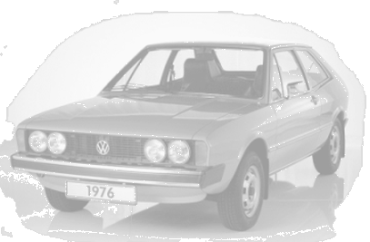
VW Scirocco
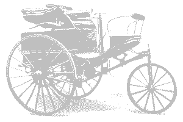
Benz Patent-Motorwagen Nummer 1
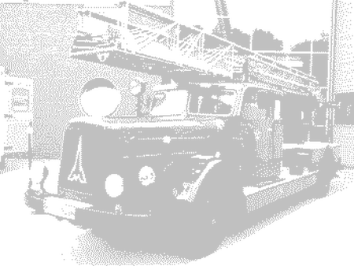
Magirus-Deutz
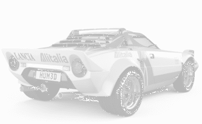
Lancia Stratos
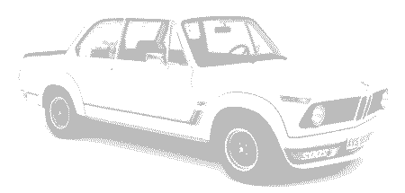
BMW 02
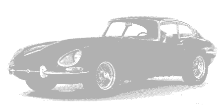
Jaguar E-Type
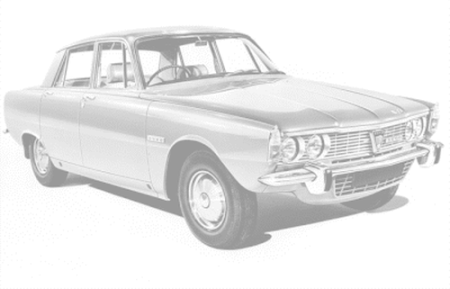
Rover P6
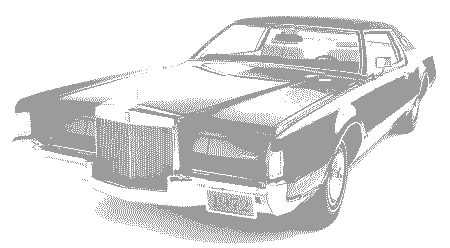
Lincoln Continental
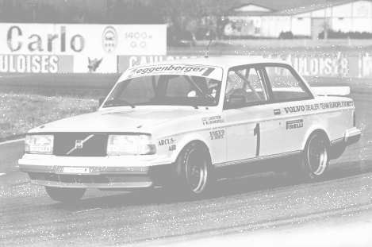
Volvo 240
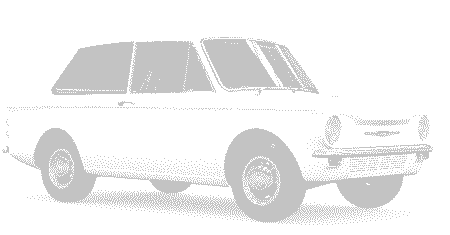
Hillman Imp
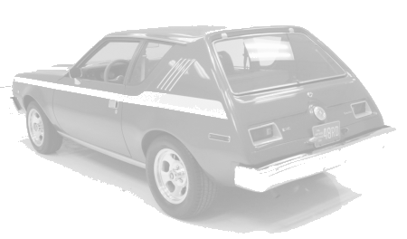
AMC Gremlin
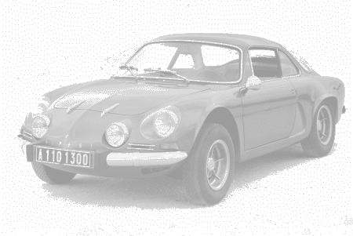
Alpine A110
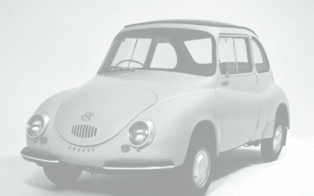
Subaru 360
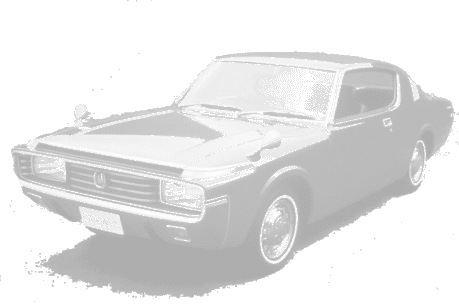
Toyota Crown
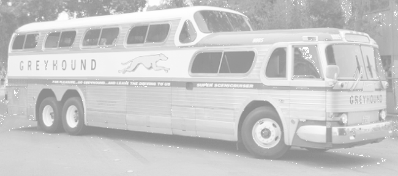
Greyhound
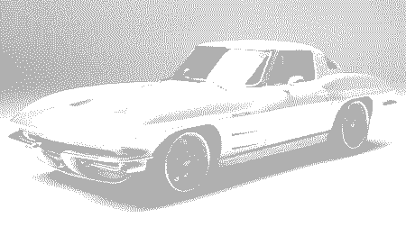
Chevrolet Corvette Stingray
1847McCormick Harvesting Machine Co 刈り取り機製造 │ │ │ │ │ │ │ │ │ │ │ │ │ │ │ │ │ │ │ │ │ │ │Deering │ Harvester │Co ││ ││ ││ ├┘ 1898 合併 1902
Harvester Co(IH) │ │ │ │ │ │ │ │ │ │ │ │ │ │ │ │ │ 1935
│ Gottlo│ Auwärter │ GmbH│ & Co│ ││ │1947 │ │Truck & Trailer │ ││ ││ ││ ││ ││ ││ ││ │Scout │19 │ │ﾄﾗｸﾀ │ │DB │ Skyliner │ ││ │1974 │ │ Atkinson │ 買収 │1980 │ ENASA │ 提携 ││ │1986 │ Navistar │ Interna- │ tional Co │ │ │┌┘ │Lion' │ │ │ │ TG- │ ├ →2001 │ Neoplan│ Bus GmbH│ │ │ │ 2009協力-│- - - - Tatra │ │ │ │ │ │ │ │ │ │ │ 2020 ─│─→─VW傘下 │ │ │ │ │ International │ Motors Neoplan
(1769)銅器具製造 Ringhoffer Werk │ │ │ │ │ │ │ │ │ │ │ │ │ │ │ 1840 Maschinenfabrik Augsburg AG │ │1841 Maschinenbau-AG Nürnberg │ │ │ │ │ │ │ │ │ │ │ │ │ │ │ 1850馬車製造 │ │ │ Ignatz Schustala & Cie │ │ │ │ 1854 │ │ │ 貨車製造 │ │ │ │ │ │ 1859 │ │ │ │ (Maschinenbau) │ │ │ │ │ │ │ │ │ │ │ │ │ │ │ │ │ │ │ │ │ 1867 │ │ │ │ 客車製造 │ │ │ │ │ │ │ │ │ │ │ │ │ │ │ │ │ │ │ │ │ │ │ │ │ │ │ │ │ │ │ │ │ 1881 │ │ │ │ 客車製造 │ │ │ │ │ │ │ │ │ │ │ │ │ │ │ │ │ │ │ │ │ │ │ │ 1890
│ │ │ │ Nesselsdorfer │ │ │ 1895
│ Wagenbau Fabriks │ │ │ Laurin & │ Gesellschaft │ Klement │ 1897Benzより ←│-
- -MAN │ │ 技術導入 │ 1900 │ 自動車製造 │ Scania │ │ │ │ │ │ │ │ │ AG │ │ │ │ │ │ ┌─┘ │ └┐ │ │ │ │ │ │ │ │ │ │ │ │ │ 1911
│ │ │ │ │ Ringhoffer- │ │ │ │ │ Werke AG │ │ │ │ │ │ │ │ │ │ │ │ │ │ │ │ 1919
│ │ │ │ │ │ │ │ │ └┐ │ Tatra11 │ │ │ 1925 Škoda→ ┤ ├→─1923買収 │ │ 傘下 │ │ │ │ │ │ │ 1927Zavody│ │ │ │ │ Tatra,a.s. │ │ │ 1930
ASAP │ │ │ │ │ │ │ │ │ │ │ │ │ Tatra77 │ │ │ │ │ └1935合併┘ │ │ Popular │ Ringhoffer- │ │ │ │ Tatra,a.s. │ │ │ │ │ V │ │ │ │ │ │ │ ･･･1945国有化･･･ │ │ FIATよりAZNP │ ┌─┴──┐ │ │ 技術導入│ │ Tatra,n.p.│ │ ↓ │ │ Tatraplan Dopravní1950 │ 1950
│ │ │ systémy BN │ Seat
S.A.│ │ │ │ │ │ (国有企業)│ │ │ │ │ │ │ 440 │ Tatra603 │ │ │ │ 1101OHC │ │ │ │ │ │ │ │ │ │ BAW │ │ │ │ │ │ │ │ │ │ │ │ │ │ │ │ │ │ │ │ │ │ │ │ │ │ │ │ │ Saab- │ │ │ │ │ Scania │ │ │ │ │ AB │ │ │ Tatra613 │ │ │ │ │ │ │ N112 │ │ │ │ │ │ │ │ │ │ │ │ 1980 │ │ │ │ │ FIAT撤収 ││ │ │ │ 1984 →─│───│────│─│ VW提携 │ │ │ │ │ │ │ │ │ │ │ │ │ 1989 └┐│ │ │ 1991 民営化 ││ │ │ VW傘下 -───│───│─│ 1993VW →-│────│───│─s Coach │ 子会社化│ │ 1992民営化│ │ │ 1997 │ Tatra a.s. │ range │ │ Škoda │ │ │ Auwachter │ │ Auto 2000 │ 2000破産 PRT-range │ │ Škoda │ 2001
│ │ │ Hd a.s. │ Siemens │ │ │ │ │ 傘下 │ │ │ │ │ │ │ - - -│ - -
-│ - - -2009協力│ │ │ │ │ Navistar │ │ │ │ │ │ │ 2014 →─│──│────│───│─VW傘下 │ │ │ │ │ │ │ │ │ │ 2019精算 │ │ │ │ │ │ │ │ │ │ │ │ │ │ MAN │ │ Škoda Works
1885
Wanderer-Werke AG 自転車生産 │ │ │ │ │ │ - - - - - - - - - - - - -
-│ 1899
│ A.Horch & Cie.1902 │ オートバイ製造 │ Firma │ │ │ │ │ ├ - - - - - - - 1909 │ │ Automobil │ │ GmbH │ │ │ │ │ │ │ │ │ │ │ │ │ │ │ │ │ │ │ │ 1928DKW │ ├ -1932
│ - -
-│ - - - - - - - - - -│ │ 1937 │ │ werk GmbH │ │ ┃ │ │ Typ 1 │ │ Typ82 │ │ ┃ │ │ ┌─←── ┃ │ ･･ソ連軍占領地区･･┌── ┃ ├─→1948 VEB ←-┤┃ 1950 HORCH AWZ MZ ┃ MotorenwerkZwickau │ BK350 354 ┃ Chemnitz │ │ │ ┃ │ 合併 ──┘ES ┃ │ 1957
Sachsenring │ 555 1958Simca ┃ 1958Barkas Trabant │ do Brasil ┃ Werke │ │ │ Auto Union ←1966 買収 │ │ │ Chrysler ┃ │ │ │ 傘下 ┃ │ │ │ │ ┃ │ │ TS250 634 │ ┃ │ │ │ │ Golf │ │ │ │ ┃ │ │ │ │ ┃ │ │ │ 1979-→Chrysler Motors │ │ │ VW傘下 do Brasil買収 │ │ │ │ ┃ │ │ │ ┌→┤ │ │ │ 協力 ─┴─│─→┤│ │ ┃ │ │ │ │ ┃ │ │ │ │ ┃ │ │ │ -VW傘下 │ 1991破綻 →Seat 買収│ │ 1992 MuZ │ ┃ │ 1993精算 GmbH │ ┃ │ 民営化 │ │ 1998 Bentley │ │ 1999 MZ 2000
買収 │ 2000NAW買収 RT125 Caminhões ┃ │ 2002破産 │ e Ônibus ┃ │ │ │ ┃ │ │ │ ┃ │ 2008閉鎖 │ Porsche →-─│ ─────────│─│ 傘下 │ │ Porsche ←-─│ ─────────│─│ 買収 │ 2013廃業 ┃ │ │ ┃ │ │ ┃ │ │ ┃ │ │ ┃ │ ┃ │ (VW子会社) ┃Volkswagen
1873
Maschinenwerkstatt für den Strickmaschinenbau (NSU) 編み機製造 │ │ │ │ │ │ 1889 Neckarsulmer │ │ │ │ - - - - - - - ←1897 技術協力│ │ 1903
│ Rasmussen & │ Ernst │ 1905車体製造───────│ │ │ │ Fahrzeug-Fabrik-werke │ │ │Zwickau │ │ │1911
│ │ │Carrosserie Schebera│ │ │GmbH │ │ ││ │ │ ││ │ │ └→1920買収1923 (DKW) │ │ 1923
Zschopauer ││ Horex Motorenwerke │ │ │ 1926買収←破産 │ 1928工場売却 │ F 1 │ ↓ 1931 │ │ 1932Porsche GmbH │ ┤ │ NSU-FIAT│ │ │ │ │ │ │ brand休止 │ │ │ 1937 │ ￤ │ │ │ F. Porsche KG │ ￤ RT125 ││ │ │ ￤ │ │ │ │ │ ￤ │ │ │ │ │ ┤ │ │ │ │ │ ￤ ─←─┤│ │ │ │ ￤ │ │ │ │ Regina ￤ │ │ │ 1950
│ 1950 │ ￤ │ │ │ Porsche 356 Setra │￤ │ │ │ Diesel │ │ │￤ │ │ │ │ │ │ │￤ │ │ │ │ │ │ ││ │ Neckar ││ │ └─→￤ ───│─│─│-DB傘下 -│──│──→ │ │ │ │ │ │ 911 │ │ │ │ │ 1967 1969
合併 -┘│ 914 │ AMG Audi NSU 1971廃業 │ │ │ AutoUnion AG 1972 │ │ 80 F. Porsche AG │ │ 924 │ │ ┌─────┘ │ │ │ │ │ quattro │ │ │ │ │ │ 1983
│ 1983
│ │ 1985 Audi │ Swatch │ │ Audi AG Sport │ │ │ │ GmbH │ │ │ │ │ │ │ │ │ │ │ │ │ │ │ │ ├ →1994
│ Boxster │ MCC AG DB─│─ │ │ │ │ 傘下 │ Fortwo │ │ │ │ │ │ │ DC ─TT │ │ │ 2002 Smart │傘下 │ │ │ GmbH ││ │ │ 撤退←─ DB─│─│→│ │ │ 傘下 │ │ │ │ │ │ │ VW買収│ │ │ │ │ │ │ │ │ VW傘下│ │ │ │ │ │ │ │ │ │ │ │ │ │ │ │ │ │ │ │ │ │ │ │ │ │ │ │ │ │ │ │ │ │ │ │ │ │ │ │ │ │ Swatch │ │ │ │ │
1883
Benz & Cie Nummer 1 1890
Daimler Motoren Gesellschaft ┠→ -名称使用権- - - - - ┃ Oesterreichische Daimler設立 →──Mercedes35PS ┃ ┃ ┃ SAF ┃ │ ┃ ┃ ┃ 21/50PS ┃ ┃ ┃ ┃ 1918 ┃ ┃ 1922
15/70/100PS Ernst Heinkel Flugzeugwerke 1926合併 Daimler-Benz AG Typ 770 ┃ Heinkel エンジン供給→ - - - - - - - - ライセンス生産･共同開発←- - - - - - ┠→1936航空機エンジン製造 III Genshagen工場設立 ┃ │ ┃ │ ┃ 1945
Unimog 構想│ エンジン→┼←開発協力 - │- - - - - 供給 └-生産委託→-│- - - - - ┃ Unimog │ 1951 Unimog買収←┤ 1951
┃ │ VEB 1954Tata提携 │ Automobil 300SL │ werke ┃ │ Ludwigs-│ felde │ ─│───│ │ │ │ 1965Esslingen買収←─ │─│───Strich-Acht │ │ 1968 Krawa引継←── │─│─── Hanomag Henschel← │─│───買収 │ │ ┃ │ │ ┃ │ │ ┃ │ │ Hanomag Henschel← │─│───合併 │ │ 190E │ │ ┃ │ │ ┃ │ │ ┃ │ │ ┃ │ 提携 │ 1990 DB1992NAW買収←───│─│─── ─ │-1994│ DB引継1998
Daimler Chrysler AG │ │ ┠───────│─ 2002
│ Maybach- │ Manufaktur│ │ Daimler AG │ │ 2010技術提携 │ │ │ ￤ ┃ │ 2014
┃ │ Mercedes-┃ │ Maybach ┠→2021商用車 │ │ ┃ 部門独立 │ │ ┃ │ │ │ ┃ │ │ Mercedes- ┃ │ Maybach Mercedes Benz
1811Firma Friedrich Krupp 1810
Henschel & Sohn 鋳鋼工場 鋳造所 │ │ │ │ │ 1816 蒸気機関生産 │ │ │ │ │ │ │ │ │ │ │ │ │ │ │ │ │ │ │ │ │ │ │ │ │ │ │ │ │ Gebr. Boehringer GmbH │ │ 1844
Erhard & Söhne GmbH ┐ 紡績機 │ │ 1846
│ 修理 │ │ Eßlingen AG │ │ │ │ 機関車製造 │ │ 1948 │ │ │ │ 機関車製造│ │ 金属加工 │ │ │ │ │ │ │ │ │ │ 1855 ││ │ │ 蒸気 ││ │ │ ｴﾝｼﾞﾝ ││ │ │ 製造 ││ │ │ │ │ │ │ │ │ │ │ │ │ │ │ │ │ │ │ │ │ │ │ │ │ │ 1871
│ │ │ │ │ Maschinenbau AG│ │ │ │ │ ││ │ │ │ │ ││ │ │ │ │ ││ │ │ │ │ ││ │ │ │ │ ││ │ │ │ │ ││ │ │ │ │ ││ │ │ │ │ ││ │ │ │ │ ││ │ │ │ └──┐ ││ │ │ │ │ ││ │ │ │ 1891 製鉄所 │ ││ │ │ │ Thyssen AG│ ││ │ │ │ ││ - - - - - - -
-││ - - -│ -
│ - │ - - - -││ ││ │ │ │ ││ ││ │ │ │ │1903
││ │ │ │ │Friedrich ││ │ │ │ │Krupp AG ││ │ │ │ │ │ ││ │ │ │ 1909 ││ ││ │ │ │ Luftfahrzeug ││ ││ │ │ │ Motorenbau ││ ││ │ │ │ GmbH ││ ││ │ │ │ │││ ││ │ │ │ │││ ││ │ │ │ │├ →1919
││ │ │ │ ││ Krupp Krawa ││ │ │ │ │ ││ │ ││ │ │ │ │ ││ │ ││ │ │ │ │ ││ │ ││ │ │ │ │ ││ │ ││ │ │ │ Zeppelin ││ │ 1928
││ │ │ 33 │ ││ │ Tempo ││ │ │ │ │ ││ │ │ │││ │ │ │ ││ │ │ │││ │ │ │ ││ │ │ │││ │ │ │ ││ │ │ │││ │ │ │ ││ │ │ │││ │ │ │ ││ │ │ │││ │ │ │ ││ │ │ │││ │ VI Tiger │ ││ │ │ │││ │ │ │ - - -││ -
-│ - - -
-│ ││-Unimog│ │ │ - - -││ -
-│ - - -
-│ ││開発協力┤│ │ ││ │ Hanseat │││ Unimog│ │ ││ │ │ │││ 製造 │ │ ││ │ │ │││ │ │ │ ││ 1954 │ ││┌────┘ │ ││ Südwerke 1955 ┤││ │ │ │ ││ │ │ │││ ││ │ ││ │ │ │││ ││ ←1960 ││ │ │ │││ ││ DB傘下 ││ │ │ │││ ││ │ ││ │ │ │││ ││ │ ─────│───││┘│ │ │ MTU ││ │ └┴┬─┘ ││ │ ─│ ─────┘1969 ││ │ ──────Hanomag-Henschel ││ │ Friedrich- ││ DB傘下 │1972
│ shafen ││ │ │Oerlikon-Bührle │ │ ││ │ │AG提携 │ │ ││ │ ││ ││ │ ││ │1981Oerlikon- │ ││ │Boehringer │ ││ │GmbH │ ││ ││ │ ││ │1987
IWKA │ ││ │Aktiengesell- │ ││ │schaft傘下 │ ││ ││ │ ├┘ ││ │1999合併
││ │Thyssenkrupp AG │Boehringer ││ │Werkzeug- ││ │maschinen ││ │GmbH ││ ││ ││ ││ ││ 20112010 2012│ Magna SteyrMAG IAS GmbH Rolls-Royce│ 傘下│ plc傘下 │ 2015Friend Group ││ 傘下 ││ ││ ││ ││ │ Thyssenkrupp MTU Friedrichshafen
1821 武器部品製造 │ │ │ │ │ │ │ │ │ │ │ │ 1844 Oberletten Sägewerk 兵器工場兼 製材所 │ 1853 Eisengießerei │ von Franz Saurer │ 鉄鋳物工場 │ │ │ │ │ │ │ │ │ │ │ │ │ │ 1869
│ Österreichische │ Waffenfabriks- │ Gesellschaft │ （ÖWG） │ │ │ │ Adolph Saurer │ AG │ │ │ │ │ │ │ │ │ │ │ │ │ │ │ │ │ - - - - - - - - - -│ - - - - -
-│ │ 1899
│ │ Oesterr- Puch │ │ eichische │ 自動車 │ Daimler │ 生産 │ ││ │ │ ││ │ 1907
│ ││ 1908←│───│ ─│ 1910│ ÖAF │ Atkinson │ Austro│ │ │ & Co │ Daimler│ │ │ │ │ ││ │ │ 1916 │ ││ │ │ 蒸気貨車 │ ││ │ │ 修理製造 │ ││ │ │ │ │ ││ │ │ 1922 │ └──┬┘│ │ FBW │ │ │ │ │ │ Steyr 合併 │ │ │ │ 1928Austro-│ │ │ │ Daimler-Puch│ │ │ │ │ │ │ │ │ │ │ │ │ │ │ │ │ │ │ │ │ │ │ │ │ │ │ │ │ │ │ │ │ │ │ │ │ │ │ │ │ │ │ │ 1948
│ 2 CM │ │ Lamborghini ││ │ │ │ │ │ │ │ │ │ │ │ │ │ │ │ │ │ Puch500 │ │ │ │ │ │ │ │ │ │ │ │ │ │ │ │ │ │ │ │ │ │ │ │ │ │ │ │ │ │ │ │ │ │ │ │ │ │ │ │ Pinzgauer │ │ │ │ 1970
Countach ││ │ Seddon │ │ │ │ 1974
│ │ │ │ │ │ │ │ │ │ │ │ │ │ │ 1980清算 ││ │ │ │ │ ├1982 1983 │ │ │ 合併│ │ │ NAW Chrysler ││ │ 傘下 ││ │ │ │ │ │ 1990 1994ｲﾝﾄﾞﾈｼｱ ││ Daimler企業傘下 ││ 傘下 1998Audi │ │ │ 傘下 │ │ Sachsenring │ │ │ 傘下 │ │ │ │ │ │ │ │ │ │ │ │ │ │ │ 2008精算│ │ │ 2010 │ │ 2012 │ │ 金胜粮油集团 │ │ 傘下 │ │ │ │ │ │ │ │ │ │ │ │ │ │ │ │ │ Saurer.
1864 Otto 1872 motoren Deutz 1898 La Cuadra │ 1904
Hispano-Suiza │ Alfonso XIII │ │ │ │ Foster & │ Seddon │ │ │ │ │ │ │ │ │ │ │ │ │ │ │ │ │ │ 1936CNT接収 │ │ │ │ │ │ 1946国有化 ENASA │ │ │ │ 1957提携 Leyland motors 1960提携 │ 1966買収 SAVA │ │ │ IH 傘下│ │ │ │ 1980IH提携 ENASA →┤ 1984 DAF 提携 Troner │ IVECO傘下 →──│ │ │
N.A. & Co 1866
│ C.D.Magirus │ gab │ │ Gas │ -Fabrik │ AG │ │ │ │ │ │ │ │ │ │ │ │ │ │ │ │ │ │ │ 1893自転車製造│ │ (Georges Richard)│ │ - - -│ - - - -│ - - - - - - - - -
- - - - -│ │ │ 1899│ │ OM │ │ │ │ ┌────────── │ 1905 │ │ │ Unic │ │ │ │ │ │ │ │ │ │ │ │ │ │ │ 1912
│ │ │ │ │ Veicoli
Industriali│ │ │ │ │ │ └ -│-Züst│ │ │ │ 買収 │ 1918│ │ │ │ FIAT VI │ │ │ │ │ │ │ │ │ │ │ │ │ │ │ │ │ │ │ │ │ │ │ │ │ │ 1928
PZInż │ │ │ │ │ │ 1933 │ │ │ 1932FIAT合弁── │ FIAT │ │ │ │ 傘下 │ │ │ │ │ │ P107 │ │ │ │ │ │ │ │ 1939ドイツ軍KHD │ │ │ │ │ 接収 │ │ │ │ │ ￤ │ │ │ │ │ ￤ │ │ │ │ │ │ │ │ │ │ │ │ │ │ Magirus │ 1950 │ │ 1950
FSO Deutz │ Simca ││ GAZ-M20│ │ 傘下 │ │ 委託生産│ │ │ │ │ │ │ │ │ │ │ │ │ │ │ │ │ │ │ │ │ │ │ │ │ │ │ │ │ Syrena │ │ │ │ │ │ │ │ 1966 →┤ │ 1965FIAT-
- - - -│ │ 統合 │ 125p 製造契約│ 1968-│→┤ 1969 │ 統合 │ │ FIAT│ 1971 FSM │ │ │ │ 傘下│ FIAT 126 ├1975合併 Iveco ┘│ 製造契約 │ │ │ │ │ │ │ OM │ │ │ │ │ ﾌｫｰｸﾘﾌﾄ │ │ │ │ │ ブランド│ │ │ │ 1983 │ │ │ │ │ Iveco │ 1984Unic │ │ │ Magirus │ 商標消滅 │ │ │ │ │ │ │ │ │ ┌ │─│─│┐││ │ Linde │ └ENASA │ 民営化 │ 傘下1992 買収 民営化 1992 │ IVECO │ 1994GM傘下FIAT 1996
France │ 1995大宇傘下傘下 1997 Magirus │ │ 大宇FSOFIATAuto Deutz GmbH │ │ 2000独立Poland SA │ │ │ │ │ │ │ │ │ │ │ │ │ 2005
│ │ │ │ UkrAVTO傘下│ │ │ │ │ │ │ │ │ 2011自動車 │ │ │ │ 生産終了 │ │ │ │ │ ├── │ │ │ │ 2015 │ │ │ │ FCA Poland │ ┝━┿━━━━━━2021━━ │ │ │ │ Stellantis │ │ │ │ 傘下 │ IVECO ││ │ Magirus France ││ FCA Poland FSO
1885
Bianchi 8HP 1906
Lancia │ │ │ │ Kappa │ Lambda │ │ │ │ │ │ │ 500M Aprilia Miles │ │ │ │ │ │ 1949
│ Abarth │ │ │ │ │ Auto │ │ │ │ │ Nuova500 ││ │ │ │ │ Fulvia │ │ │ - │ - - -│ - - -│ -
- -│ │ │ 1968─│─1969 →A112 1971→─│─ │ FIAT Stratos │ 傘下 │ │ 124Abarth │ │ │ Delta │ │ │ │ │ │ Y10 │ │ │ │ │ │ │ │ │ │ │ │ │ │ │ ──│──│─1995 │ Kappa 消滅 │ │ │ │ │ │ │ │ │ │ │ │ │ │ Abarth 500 │ │ │ │ │ │ │ │ │ ━ 2021
│ │ │ │ │ │ │ Lancia
1884
1898
1899 - - - ┘│ S.A.F.A.T. 1901
1900
Ceirano &C. Fraschini ┃ 1905
STAR 1905
│ ┃ 1906
SCAT │ 1906
FLAG │ ┃ │ │ SPA │ │ 1908 │ │ └ 1909─┘│ FIAT │ │ 合併 │ ┃ │ │ │ │ ┃ │ │ │ 1914
│ ┃ │ │ │ Maserati │ ┃ ┌───┤│ │ 開発協力┤ ┃ 1919
│ │ │ │ │ ┃ Ceirano │ 1921→┤ │ │ ┃ ││ 清算 │ │ │ ┃ └1925合併┌─┘ │ │ ┠→1926 │ 1926 FIAT │ │ ┃ SAFAF │ 傘下 │ │ SCAT ←─│┤ │ │ │ 買収 │ │ │ │ │ │ │ 1933
│ │ 買収 1934
│ Innocenti │ │ Topolino Simca │ │ │ │ ┃ │ │ │ │ │ ┃ │ │ │ │ │ ┃ │ │ │ │ │ ┃ │ │ │ │ │ ┃ │ │ │ │ │ ┃ │ │ │ │ │ ┠───│─←1947 │ A6 1500 │ ┃ │ 統合 │ │ 1949精算┃ │ │ │ ： ┃ │ │ │ ： ┃ │ │ │ 1955
┃ │ │ │ Isotta Nuova500 │ De
Tomaso│ │ Fraschini ┃ │ 1959
1959 │ Motori ┃ 1000 │ BMC車生産 │ └┐ ┃ │ │ │ Quattroporte │ 1963 →─│───│──│─────124 Chrysler │ │ Ghibli │ 傘下 Fordエンジン │1968Citroën傘下 │ ┃ 1970 Pantera │ Bora │ Chrysler │ 1972 →─│─────┃ France │ BL傘下 │ │ Ritmo Bagheera │Nuova Mini 1975 │ ┃ │ │ 1976 De Tomaso │ ┃ 1979PSA傘下 ├←De
Tomaso傘下 │ Panda │ 傘下 │ │ ┃ │ │ 1983ダイハツ │ │ ┃ │ │ 技術提携 1984 │ ┃ Peugeotに統合│ │ Chrysler合弁 │ 買収 │ │ │ │ Innocenti ───←│1990FIAT傘下│ │ ←│───│─←1993 │ 買収 │ │ FIAT傘下 │ ┃ │ │ │ │ ┃ │ │ 1999─→─ ┃ │ Ferrari傘下 │ ┃ │ │ │ ┠──←───│───2005 FIAT傘下 │ ┃ │ │ │ ┃ │ │ │ ┃ │ │ │ ┃ │ │ │ │ │ FCA Italy SpA ──────┼─────┃ │ │ ┃ │ │ Topolino │ │ ┃ │ Isotta ┃ │ Fraschini FIAT │ Motori
- - 名称使用権
1906
A.L.F.A. 1913 1916 1918 Alfa Romeo 6C 8C ───┐ 1940
AAC │ │ 1947
Ferrari │ │ Giulietta │ │ │ │ │ Giulia 250GTO │ │ FIAT傘下 │ │ │ │ │ │ │ │ │ │ │ 155 │ │ │ │ │ │ 8C │ 458 Italia │ │ 2016FCA離脱 │ │ │ │
1883 Landmaschinenfabrik Glas 農業機械製造 │ │ │ │ │ │ 1896
│ Automobilwerk │ Eisenach(AWE) │ │ │ │ │ │ │ │ │ │ │ │ │ Rapp Motorenwerke │ │ 航空エンジン製造 │ │ │ 1916Andreas MotorenWerke AG │ Glas GmbH (BMW) │ │ │ │ R32 │ 1922
│ Glas GmbH │ │ │ │ │ 傘下 │ │ │ │ 1934Nash提携 -│──│──── 328 │ │ │ │ │ │ │ │ │ │ │ │ │ │ │ │ │ │ │ │ │ │ │ │ │ │ │ │ │ R68 │ 1952国有化 Hans Glas │ Goggomobil │ AWE GmbH │ │ Goggomobil │ Wartburg311 │ │ │ │ Neue klasse │ GT 02-Serie │ 1966Hans │ Wartburg353 Glas GmbH R75 1968Glas←─│──┘ 買収 │ R90S ├-1972
│ R100 │ BMW M │ │ │ ││ M1 ││ │ ││ │ ││ │ ││ │ ││ │ ││ │ ││ │ 1991精算│ 1994Rover -─│────────│ │ │ 00Rover売却 -│-2001Mini brand 03R-R買収 ←│────│───│ │ │ │ │ │ │ │ │ │ │ │ │ │ │ │ │ │ │ │ │ │ │ │ │ │ │ │ │ │ │ │ │ │
1828
Vickers 鋼鋳物工場 │ │ │ │ │ │ │ │ │ │ 1847 Elswick works │ 油圧機械･クレーン･橋梁製造 │ │ │ │ │ │ │ │ │ アームストロング後装砲製造 │ │ │ │ │ │ │ │ 1867 Vickers,Sons & Co │ │ │ │ │ │ │ │ │ │ │ │ │ │ │ │ │ │ │ │ 1882
│ Armstrong Mitchell & Co │ │ │ │ │ │ │ │ │ │ │ │ │ │ - - - - - - -
-│ - - - - - - - -1897 Sir WG Armstrong 1897 Whitworth & Co Ltd Vickers,Sons │ & Maxim ┌─┴ ────┐ │ 1904自動車 │ │ 部門 1906 │ │ │ Rolls-Royce │ │ │
Ltd │ │ 1909
BAC │ Silver Ghost │ 1911 GN cyclecar 1912
│ ┌┴┐ │ Vickers │ Siddeley-Deasy │ │1914 │ Ltd │ Motor Car Co │ │航空エンジン │ │ │ └──┬─┘ │部門 │ │ │ 1919
│ │ 1919
│ │ │ │ │ Bentley │ │ │ │ │ │ 3 Litre │ │ 1922 │ │ │ │ │ ├─┘ Frazer Nash │ │ Phantom │ │ 合併 │ │ │ │ │ │ 1927
1927 │ │ │ │ │ Vickers- AFN Ltd │ │ 1931 ──←─┤Armstrongs │ │ │ Bentley │ │ │ │ │ │ 買収 │ ┌─│──-1934
BMW│ │ 輸入組立 │ │ │ │ │ │ ┌─┘ │ │ │ │ │ │ 1938Archie│ │ │ │ │ │ Frazer-Nash │ │ │ │ │ │ │ ┤ Lancaster │ │ │ │ │ 独立 ├──│── │────│─←1946BAC Bristol ││ │ │ MkVI │ 傘下 Cars │ │ │ │ │ │ │ │ │ │ │ │ │ │ │ 400 │ Sapphire │ │ │ │ LeMansCoupe │ │ │ │ │ │ │ 1954 │ │ │ │ │ │ │ Porsche車│ └┬─┘ │ │ │ │ 取扱 │ 1959合併 │ │ │ │ │ │ BSEL │ │ │ │ │ │ │ │ │ │ │ │ │ │ SilverShadow │ │ │ │ │ └──── │─1966 │ │ │ │ │ BSEL買収 │ │ │ │ ･･1970 破綻･･･ │ ├ 1971┐ ･1971国有化･･ │ │ Frazer-Nash 412 1973
│ │ │ │ Consultancy │ Rolls-Royce │ │ │ └─┐ │ │ Motors │ │ 1977国有化 ││ │ │ │ │ │ │ │ │ 1980 Vickers傘下 -→──┼Rolls-Royce│ │ │ │ │ │ Bentley買収 │ │ │ │ │ │ │ │ │ │ │ │ │ │ │ │ │ │ │ │ │ 1987売却│ │ │ │ │ │ Porsche │ │ │ │ │ │ │ │ 1992 BMW提携 │ │ │ │ │ │ │ │ │ │ │ 1998 Bentley売却──VW傘下 │ │ │ │ ├←─ │-Rolls-Royce │ 2003 BMW傘下 │ │ plc傘下 │ │ Rolls-Royce │ │ Vinters │ │ Motor Cars │ │ Engineering │ │ │ │ │ Ltd │ │ │ │ │ │ │ │ │ │ │ │ │ │ │ 2012MTU ││ │ │ │ 買収 │ │ │ │ │ │ │ │ │ Phantom VII │ │ │ │ │ │ │ │ │ │ Rolls- │ Vinters │ │ Royce Hd │Engineering │ Frazer-Nash
- - - → - - - -1899
Lanchester Motor Ltd 1903 事業再編 │ │ 10 hp 装甲車 40 hp │ │ │ │ │ │ │ │ │ 1931→── BSA傘下 Daimlerに 生産移管 │ │ │ │ │ │ │ 1948 │ │ │ Seven │ │ │ Elan Europa 1983
Proton 三菱 合弁 │ │ │ │ Elise │ │ │ │ │ │ │ │ │ │ │ │
1861BSA 小火器製造 │ │ │ │ 1870
│ Carrosserie │ Vanden Plas │ │ │ 1896
Co Ltd BSA Sidecar Co │ Coachbuilding │ Scout │ │ New │ │ │ 1945 Jaguar Cars │ │ ─←─│ │ │ │ │ E-Type 1966
│ ├1968 XJ DS │ ※→─NVT │ ･･･････････ │ │ │ ├─── │ │ 1989Ford傘下→─ │ │ │ │ │ │ │ │ │ 2008 JaguarLandRover F-Type │ │ │ │ │ BSA
──┐│ │ │ │ │ │ │ │ │ │ │ │ │ │ │ │ │ │ │ │ │ │ │ │ │ │ │ 1917 Plas Ltd ボディ 製造 │ │ │ │ │ 15 │ │ │ │ │ 1946 ──傘下 1952 │ │ │ │ │ │ British Mo │ 合併 420 │ │ │ │ │ │ │ │ │ │ │ │ │ │ │ │ │ │ ─→──│ │ │ ─2014│
│ │ 1887 Wolseley Sheep Shearing Machine Co Ltd │ │ │ │ ┌───┘ 1901
│ 1905
│ Motor Co│ ││ │1907 │ ││ │1912 WRM│ │Motors│ │││ │││ │1919
│ │Motors Ltd│ │├┐│ ││1924 Morris│ ││Garages Ltd│ ││││ ││││ ││1930
│ ││M.G. Car│ ││Co Ltd│ ││││ ││││ ││││ ││││ ││││ ││││ ││││ ││││ │││(BMC) │ ││││ │ ││││ Scam │ Mini │ │ │ ││││ Stan ADO17 MGB │ tor Holdings Ltd (BMH) │ ││││ Thor British Leyland Motor Co （BLMC） │ │ │││買収 │ ││││ │ ││1978 BL Ltd │ │││ ──1982 │ │││ 1986
│ │ │ 1987│ │ │ │ │ │
│ │ │ 2000Ford傘下 │ 2005倒産 │ 合併 FCA ───│ ──FIAT groupe･ │ │ ━│ ━━━│ ────│─── │ │ │ Stellantis NV
1868
Tata Group │ │ │ │ │ │ │ │ │ │ │ │ │ │ │ │ │ │ 1899
│ │ Albion Motors │ │ │ │ │ │ │ │ │ │ │ │ │ │ │ Motors │ │ │ │ │ │ │ │ │ │ │ │ │ │ │ │ │ │ │ 1921
│ │ │ Scammell│ │ │ │ │ │ │ │ │ │ │ Pioneer │ │ │ │ │ │ │ │ │ │ │ │ │ │ │ │ │ │ │ │ │ │ │ │ │ │ │ │ │ Eig │ │ │ │ │ │ │ │ │ │ │ 1945 │ │ │ │ Tata │ TE │ │ │ Motors │ │ │ │ │ │ Albion買収←1952 │ Daimler│ │ Leyland │Benz │ │ 傘下 1955 提携 │ mell買収←- │-Leyland│ │ │ │ 傘下 │ │ │ ─│──│- 1960ACV買収 ← │─ │── │─── Rover買収 ←│ ─│──│───nycroft買収← │ ─│──│───│ │ │ │ │ │ │ │ │ │ │ │ │ │ │ │ │ │ │ │ │ │ │ │ │ │ │ │ │ │ │ │ │ │ │ │ │ │ │ │ └バス部門-│ ───Volvo傘下 ││ │ │ │ │ │ │ │ │ │ │ │ │ │ │ │ │ │ │ │ │ Land Rover │ │ │ │ │ │ │ │ │ │ │ │ │ │ │ │ │ Tata
1870
│ │ │ │ 1878 Starley & Sutton Co │ │ │ 1880
│ │ Adler 1884 S.Bettman & Co │ │ Fahrrad │ │ werke Cycle Co DTF │ │ │ │ │ 1889 │ │ │ │ JK
Starley│ │ │ │ & Co Ltd │ │ │ │ │ │ │ │ │ Rover Cycle │ │ │ │ Co Ltd │ │ │ │ │ │ │ │ │ │ │ 1902 │ │ │ │ Components │ │ │ 1904 傘下 │ │ │ Rover Co │ │ 1906 │ │ │ │ Triumph │ │ │ │ Engineering 1911 │ │ │ Co.Ltd TWN │ │ │ Model H │ │ │ │ │ │ │ │ │ │ │ │ │ │ │ │ │ │ │ │ │ │ │ │ │ │ │ │ │ │ │ │ │ │ │ │ │ │ │ │ │ │ │ │ │ │ │ │ │ │ │ │ │ Motor Co │ │ 1932
Ariel│ │ │ Motors │ 部門 - │ - - -│
- -1936│ Speed Twin │ │ │ │ ht 1939倒産│ │ │ │ │ │ │ │ Engineering ││ │ │ │ │ │ │ │ 20 Standard│ │ │ │ │ │ │ │ │ │ Renown │ │ Land Rover │ │ │ TR BSA傘下 ││ BSA傘下 │ │ │ │ │ │ │ │ │ │ │ │ └── │── │-1958
Herald │ │ │ Triumph- Leyland傘下 │ P6 │ Adler ──── │──── │── │──│─ │ │────│─←─1967│ │ │ │────│─Leyland傘下-│ ────│ ││ Range Rover │ │ │ ││ │ │ │ Dolomite │ │ │ │ ││ │ │ │ │ SD1 │ │ │ ┌──┴─┐│ │ │ ホンダ提携 1978
│ │ │ │ Land Rover Ltd │ │ 1983破産 │Defender │ │ │ │ Motorcycles ││ │ Ltd │ │ │ │ │ │ │ │ │ │ │ │ │ │ │ │ │ │ │ │ │ │BMW撤退 │ │ │ │ │ │ │ │ │ │ │ │ │ │ ←-│─2008 │ │ Jaguar Land Rover │ │ Automotive PLC │ │ │ │ │ │ │ │ │ │ │ │ │ │ │ │ group │ │ Triumph
1867
Crossley エンジニアリング事業 │ │ │ │ │ │ │ │ │ │ │ │ 1889
│ Royal Vehicles│ │ │ │ │ │ 1896│ │ Thor │ │ │ ├ →─┐│ │ │ 1903車両││ │ 製造部門││ │ 1906 │ │ │ Crossley ││ │ Motors ││ │ │ ││ │ │ ││ │ │ ││ │ │ ││ │ │ ││ │ │ ││ │ │ ││ │ │ ││ │ │ ││ │ │ ││ │ │ ││ │ │ ││ │ │ ││ │ │ ││ │ │ ││ 1935 │ ││ Crossley │ ││ Premier │ ││ Engines │ ││ Ltd │ ││ │ │ ││ │ │ ││ │ AEC傘下 - │ ─│─│┌ ACV設立 │││ │ ││ ││ │ ││ ││ │ ││ ││ │ ││ ││ │ ││ ││ │ ││ ││ │ │ │┘ │ │ │ │ │ │ │ │ APE- │ │ Crossley │ │ Ltd │ │ │ │ │ │ │ │ │ │ 1981NEI -Allen
Ltd Crossley Engines │ │ 1988R-Rplc傘下 │ │ │ │ │ │ │ │ -Adler
1855
London General Omnibus Co バス運行業 │ │ │ │ │ │ │ │ │ │ │ │ │ │ │ │ │ │ │ │ │ │ │ │ │ │ │ │ │ 1909 motor UERL 傘下 AEC │ │ │ │ │ 1922 │ Cars │ │ │ │ 1933
LPTB │ │ │ │ │ │ Crossley │ 1948
│ │LTE │ │ RegentIII │ │ │ │ │ │ │ │ │ │ │ │ 1963
LTB │ │ 1967 │ │ Cars │ │ │ 1970
AC │ GLC │ │ │ │ │ │ │ │ │ │ │ 1984
Auto LRT Cobra │ │ │ │ 1994AC│ │ 2003
TfL │ │ │ 2007AC│ Ltd │ │ │ │ │ │ │ │ TfL
19011913
Bamford & - - -Martin │ │ │ 1924倒産 1926 Ltd 1932 Motors Ltd │ │ │ │ │ │ │ │ DB 1 │ │ │ │ │ │ DB 5 Cobra 1963 Lagonda Ltd │ │ │ │ │ │ │ │ │ │ │ │ │ │ │ 1996 │ 1999 │ Land │ │ │ 2007 │ 2008 │ 2010 2012Daimler DB11 │ │ │ │ │
1903 ←
- 投資 - - - - - - - - - - - - - - - - - - - - - - - - - - - - - - -Ford Motor Co ┃ ┠ ─────→──────┐Model T 1909
┃ Ford of Britain ┃ │ ← -┃ - - - - - - - - - - - - - - -│ - - - - - - - - - - - - - - - - - - - - - ┠─→1916
│ ┃ 1917
│ │ ┃ │ │ │ ┃ │ │ │ Lincoln─←─┤ │ │ 1922
Soviet Union 買収 │ │ │ │ 1926
│ ┃ │ │ Germany│ AustraliaKoç Holding │ │ - │ - - │ - │ - │ -
- - - - │ - ┬協定┐│ │ │ │ │ │ │ 1930
KIM ┃ │ │ │ │ │ │ 1932NAZ │ ┃ │ │ │ │ │ │ 1933 │ ┃ Zephyr │ │ │ │ │ GAZ │ ┃ │ │ │ │ │ │ M1 │ 1939─┐ Continental │ │ │ │ │ │ │ Opel
Kadett_┃ │ │ │ │ │ │ │ │ 生産設備┃ brand │ │ │ │ │ │ │ │ ↓┃ │ │ │ │ │ │ │ │ 1945 MZMA ┃ │ │ │ │ │ │ │ │ Moskwitsch ┃ │ │ │ │ │ │ │ │ │ F Series │ │ │ │ │ │ │ │ │ ┃ │ │ Comète │ │ │ │ │ │ ┃ │ │ │ │ │ │ │ │ │ Thunderbird │ │1954合併 ││ │ │ │ │ ┃ │ │Simca │ │ │ 折半 │ Volga │ 出資 - - │ - -│ - │ - - │ - │ - │ →出資←┤ │ │ ┃ │ │ │ │ │ │ 1959
│ │ │ ┃ │ │ │ │ │ Falcon Ford │ │ │ ┃ │ │ │ │ Cortina │ Otosan │ │ │ GT40 │ │ │ │ │ │ │ │ │ │ ┃ │ │ │ └┬┘ │ Anadol │ │ │ ┃ Cougar ││ 1967
│ │ │ AZLK 1967 Mustang │ │ │ Ford of Europe│ │ │ │ 1969
現代 現代 →─│ - -│ - │ - - - -│ - - │ - - │ - │ - │ - - -│ →Fordより │ │ ChryslerEscort │ │ │ │ │ 技術導入┃ │ │ 傘下 Granada │ │ │ │ │ 1973←── Granada │ │ │ │ │ │ │ │ │ 三菱より┃ │ │ │ Fiesta │ │ │ │ │ 技術導入┃ │ │ 1978 │ │ │ │ │ │ Pony ┃ │ │ PSA傘下│ │ │ │ │ │ │ ┃ │ │ Talbot brand │ │ │ │ │ │ │ ┃ │ │ │ │ │ │ │ │ │ │ ┃ │ │ │ │ │ │ │ │ │ │ →Aston買収 ││ │ │ │ │ │ │ │ │ │ │ Talbot廃止│ │ │ │ │ │ │ ┃ │ │ │ │ │ │ │ │ │ │ ┃ │ │ │ │ │ │ │ │ 1993 OAO │ ┃ │ │ │ │ │ │ │ │ Moskwitsch │-│──│─│───│──│──│───│──│──│-※ -│ ──│─│-※Focus │ │ │ │ 1998
│ ※─ │ │ │ │ │ │ │ │ Renault合弁 │ │ │ │ │ │ │ │ │ Avtoframos │┃ │ │ │ │ │ │ │ │ │ │ ┃ │ │ │ │ │ │ │ │ │ │ │ │ │ │ │ │ │ │ │ │ Jaguar マツダ │ │ │ │ │ │ │ │ │ │ │ │ │ │ │ │ │ │ │ │ │ │ │ │ │ │ │ │ │ │ ┃ │ │ │ │ │ │ │ 2014Renault │ ┃ │ │ │ 2016│ │ │ Russia │ ┃ │ │ │ │ │ │ 2022Renault │ ┃ │ │ │ │ │ │ 撤退 │ ┃ │ │ │ Koç ││ ┃ │ Peugeot
brand│ Hd │ │ 自動車 Ford
- - - - - - - - - - - - - - - - - - - - - - - -1907
SKF │ │ │ - - - - - - - - - - - - - - - - - - - - - -│ │ │ │ │ ├ ┐│ 1926 │ AB Volvo │ │1928Hub van Doorne's │ │Machinefabriek │ │1932
DAF │ ││ │ ││ │ ││ 1937│ ││ 國産自動車│ ││ │ │ ││ │ │ ││ │ │ ││ │ │ │1949 │ │ │トラック・トレーラー ││ │バス製造 │ │ ││ │ │ ││ │ 1954 │ ││ │ 新進工業 │ PV544 │ │ │ │ │1958乗用車 倒産 │ │ │CVT搭載車 1962セナラ ││ │生産 自動車 │ │ ││ └→新進自動車 │ ││ 三菱Colt委託生産│ ││ 1966トヨタ提携1967 │ ││ │ 大宇産業 │ Renault提携│ │ │ │ ││ 1972GM資本参加│ -│ - - - - - - │- - - - - - │ -
- - - - -│ 1975←乗用車部門セハン自動車 │ │ 240 │ いすゞ車委託生産│ │ 1978分社┐│ 1978大宇傘下→ ┤ │ │乗用車部門││ │ │ │Volvo │ 1983大宇自動車 │ │ │Cars │ │ │ │ ││ │ 1986 │ │ │ 1987合併││ 吉利汽車 │ │ │ Leyland│ │ │ │ │ │ 1991──│─│─│─※│ │ │ 三菱合弁││ │ 1992GM合弁 │ │ │Renault撤退│ │ 終了 │ │ FH S80 │ │ ※─│───── │ │ 1998双龍買収←──│ 2001傘下 │ │ 2000双龍売却│ Renault│ │ │ 2002GM傘下-独立│ Trucks│ │ │ │ 大宇商用車│ 買収│ │ │ │ 2004Tata傘下│ 2007日産││ │ │ Tata
Daewoo│ ディーゼル│ │ │ │ │ │ 買収吉利 →│─2010│ │ 2011 │ │傘下 │ Volvo買収│ │ │ │───│─│─│───│──│──│ ││ │ Proton･│ │ │ ││ │ Lotus買収│ │ │ │───│─│Daimler買収│ │ │ │━━━│━│━│━━━│━━│━━│ ││ │ │ │ │ 2020 │ ││ │ │ 2023 │ │Cars │ │ │ │ VolvoTrucks │ │ Daewoo SKF DAF Trucks
- - - - - - - - - - - - - - - - - - - - - - - -
- - - - - - - - - - - - - - - - - - - - - - - -
1954
河東煥自動車 製作所 │ │ │ 合併 提携 │ - - - - - - - - -│ 1976
双龍重工業 │ │ │ │ │ │ │ │ ┤ │ │ │ │ 技術提携 │ │ │ │ │ 2001STX │ 2003
│ │ KG Group │ │ │ │ │ │ │ │ │ Mahindra │ │ │ │ │ │ │ │ │ │ │ │ │ │ │ KG傘下 -┤ │ │ │ │ │ KG Group │ STX
1890 清谷商会 │ │ │ │ │ │ │ │ │ │ │ │ │ │ 1920 東洋コルク 工業 │ 1927
東洋工業 1931 三輪トラック生産 │ │ │ │ │ │ │ │ │ │ │ │ │ │ │ │ │ ファミリア 1965
│ Asia コスモスポーツ Motors │ └┐ │ │ │ - - │ - │ - - - -m│ │ │ 起亜 1979Ford 傘下 資本提携 │ │ │ 1984マツダ│ │ │ │ │ ロードスター │ │ ※─ │ │ │ │ Ford傘下 │ │ │ │ │ 2008 Ford撤退 │ 2013 Fiat提携 │ │ │ │ │ │
1870 九十九商会 │ │ │ │ │ │ │ │ │ │ │ 1893 三菱合資会社 │ │ │ │ │ │ │ │ │ │ │ 1920 内燃機 1922 航空機 │ │ │ │ ┘ │ │ │ │ │ │ │ │ │ ┘Kaiser │ │ │ │ │ │ └-┼-┘ ※──→─ ├ ─┐Chrysler │ 1970 独立 ─合弁─│ │ - ┤ │ │ │ │ │ │ │ │ │ │ │ │ │ 1985合弁─────│ Chrysler│ Proton│ ランサーEvolution │ │ │ │ │ ├→分社─┐ │ '03 │ '05Daimler傘下├────│── │ │ │ │ NMKV │-
-設立 │ │ │ 2016 ───│-19│ │ │ │ │ │
1875
1887
│ │ │ 1896合併 ────│ │ - - │ - - - - - - - │ │ │ 1907
│ Hillman│ │ Ten │ │ │ │ │ │ │ │ │ │ │ │ │ │ Commer │ ├←1928 │ Humber傘下1931 ──│→──Minx 傘下 │ │ │ │ │ │ │ │ │ │ │ Hawk │ │ │ │ │ │ │ │ │ │ │ │ │ │ │ │ │ Gazelle │ Imp │ ──│────│ │ │ │ │ │ ─────│ ────│ │ 1976 製造中止 2014 ────
Gladiator────
- - - - - - - - -1908
Karrier │ │ 1913
│ Rootes│ Group│ │ │ │ │ │ │ │ │ │ │ │ │ │ │ │ Rootes │ 傘下 │ │ │ │ │ │ │ │ │ │ │ │ │ │ │ │ │ │ │ │ │ │ │ FC │ │ │ │ │ │ │ │ │ ───────│ │ 1971 │ │ 消滅 │ │ 1976 │ │ 折半 │ -┼── │ │ │ │ │
1888└─Darracq and 1902 │ 1903
│ Clément──│ Talbot │ │ │ │ │ │ │ │ │ │ │ │ ├→─1919 Darracq S.T.D. 買収 Motors │ │ │ │ │ │ │ Sunbeam │ Talbot │ 1936 Rootes 精算 傘下 Alpine 1954 │ │ │ │ │ │ ─│───→1967
│ 1969→──────── │ ──│───────│ Chrysler │ España S.A.│ ├─┐ truck･bus部門 1981 RVI 傘下─│ Renault Trucks │ (Espana) SA │ │ │ │ │ │ │ │ │ │ │ │ │ │ │ │ │ │ │ │ │ │ │ │ - │ - │ ← -※│ │ │ │ │ │ │ │ │ │ │ Renault Trucks │ (Espana) SA
───────
- ←投資 - -│ │ │ │ │ │ │ 1928→─ 傘下 Airflow │ │ │ │ │ │ │ │ │ │ │ │ │ │ │ │ │ │ │ PSA傘下 1978→─ ┌── DSM 設立 │ MMMA MMNA Rivian │ │ 買収 │ │ │
───────
Dodge1904
│ │ │ │ │ │ │ │ │ └── ┌─ Plymouth brand
│ │ │ │ │ │ │ │ Coronet │ │ │ │ │ │ Valiant Dart │ │ Charger │ │ │ │ │ Ram │ │ │ │ │ Viper │ │ │ │ 2001 製造中止 2007 Ram │ │ ━2021 │ │ Trucks
───────────Maxwell 1908
1908
Chalmers Willys │ │ │ │ │ │ │ 1914
│ │ │ Kaiser ││ │ │ ││ │ │ ││ │ │ ││ │1925 │ │ │Chrysler │ │ │Co 1927
│ │Graham │ │┃ Paige │ │┃ │ │ │Airflow │ │ │┃ │ ┌─┘ │┃ │ │ │ New Yorker │ │ │ ┃ │ │ │ ┃ │ │ │ ┃ └ ┤JeepCJ ┃ 1945
Kaiser │┃ Motors │ ┃ │ │ │ ┃ 1953←─┤ ┃ Willys買収 │ ┃ 1955Kaiser │ ┃ Industries Co │┃ │ │ ┃ └┬─┘ ┃ │ 1963
買収 Kaiser Jeep 買収 │ ├→── 三菱自工 1971
┃ AM General ┃ Co ┃ │ ┃ Humvee ┃ │ 1987AMC ←─│───買収 │ ┃ │ │ 売却 │ ┃ │ ━│━━━ Daimler │ Chrysler AG │ ┃ │ 300 │ │ 2009倒産 │ ┃ │ ┃ │ │ 傘下 │ ┃ │ 傘下 │ ┃ │ ┃ │ │
1881
Leonard │ │ │ │ │ │ │ │ ┌─ │ 1898
│ Motocycles │ 1902
│ Jeffery Co │ │ Rambler │ │ │ 1909 │ │ │ Hudson│ │ │ Motor │ │1914
│ Car
Co││Kelvinator │ │ │ ││ 1917 │ │ ││ Motors Co ││ ││ │ │ │ └┤ │ │ │ │ │ │ │ │ │ │ │ │ │ │ │ │ │ │ │ │ │ │ │ │ │ │ │ │ │ │ │ └ ─┬─┘│ │ 1937
│ │ Nash-Kelvinator ││ │ │ │ │ │ │ │ │ │ │ │ │ │ │ │ │ │ │ Healey │ │ ├───┘ │ 1954 │ │ │ │ │ │ │ │ │ │ │ │ │ │ │ │ │ │ Kaiser Jeep部門 │買収 │ │ │ Pacer │ Renault →───│──傘下 │ │ │ Wrangler │ │ │ │ │ │ │ │ │ │ │ │ │ │ │ │ │ │ │ │ │ │ │ │ │ │ │ │ │ │ │ │ │ │ │ │ │ │ │ Motocycles
1810
Peugeot製鋼所 │ │ │ │ │ │ 1825Societe Peugeot Freres │ │ │ │ │ │ │ │ │ 1842 Peugeot Frères et Cie │ │ │ │ │ │ │ │ │ │ │ │ │ │ │ │ │ │ │ 1876
│ Clément Cycles │ │ ├ ─1882
│ Peugeot ││ │ │ │ │ │ │ │ │ │ │ │ 1889
│ │ │ 1891
│ │ │ Gladiator│ │ │ cycles ┼ ─→1896 │ Clément,│ Société des │Gladiator
&│ automobiles │Humber
&│ Peugeot │ Co
Ltd│ Type3 │ │ │ │ │ 独立 │ │ │ │ │ │ │ │ │ L76 │ │ │ │ │ │ │ │ │ │ │ │ │ │ │ │ │ │ │ │ │ 1920破産│ │ │ └ - - - - - - │ │ │ │ │ │ │ │ │ │ │ │ │ │ │ │ │ │ │ 402 │ │ │ │ │ │ │ │ │ │ │ │ │ │ │ │ │ │ │ │ │ │ │ │ │ │ │ │ │ │ │ │ │ │ │ │ │ │ │ │ │ │ │ │ │ │ │ │ │ │ │ │ │ ├─ │ │ │ 1966 ││ │ PSA ││ 504 │ ││ │ │ ││ │ │ ││ 604 │ ││ PSA Renault -│ ──────│ │ 205 │ ││ │ │ ││ │ │ ││ │ │ ││ │ │ │Peugeot │ │ │Saveurs │ │ │SNC │ │ ││ │ │ ││ 406 │ ││ │ │ ││ │ │ ││ │ │ │2007 │ │ │PSP │ │ ││ │ │ ││ │ │ │Peugeot │ │ │Saveurs │ │ │SNC │ │ │━━2021
│ Stellantis │ │ │ │ │ │ │ Automobile│ Peugeot
1832 Fabrique auvergnate de la famille Barbier d'Aubre │ │ │ │ │ │ │ │ │ │ │ │ │ │ │ │ │ │ 1867 Perin, │ Panhard & C │ │ │ │ │ │ │ │ │ │ │ │ │ │ │ │ │ │ │ 1886
│ &Levassor Michelin et Cie │ │ 1890 Daimler │ エンジン生産 │ Type A │ 1895
│ │ │ │ │ │ TypeX1 │ 1901 │ │ │ Citroën │ │ │ Hinstin │ │ │ et Cie │ │ │ │ │ │ │ │ │ │ │ │ │ │ │ │ │ │ │ │ │ │ │ │ ┌┴─┐ ││ │ │ │ ││ 1919 │ ││ Automobiles │ ││ - Citroën │ ││ ││ ││ ││ │ ││ │ ││ │ ││ │ ││ │ TractionAvant │ ├ 1935Dynamic │ Michelin│ │ 傘下│ │ ││ │ ││ │ ││ │ ││ │ ││ │ 2CV │ │ ││ │ ││ │ DS Dyna Z │ ││ │ ││ │ ││ │ ││ │ ││ │ ├←1965Citroën│ │傘下 │ │1967乗用車 │ │生産中止 │ GS │ │ ││ │ 1974破産│ │ │ 傘下│ │ │ BX └───│─ │ ││ │ ││ │ ││ │ ││ │ ││ │ ││ │ ││ │ ││ │ ││ │ ││ │ ││ │ ││ │ ├──┐│ │ │2009
│ │ │Automobiles│ │ ││ │ │ │2015独立 ││ ││ │ │ Ami │ │ │ ━│ 傘下│ │ │ ││ │ │ ││ │ │ Michelin
1861Bouhey │ │ │ │ │ │ │ │ 1875 Brockway │ Carriage Works │ │ │ │ │ │ │ │ │ │ │ │ │ │ │ │ │ │ 1894Usines │ Bouhey │ │ │ │ 1897Charles│ │ Blum
& Cie│ │ │ 1900 │ │ │ Brothers
Co│ │ │ │ │ │ │ │ │ │ │ │ │ │ 1908│ 合併 │ CFMA │ 1911Saurer│ 設立 │ MotorTruck │ 1912HewittSOMUA Latil │ Truck買収│ │ │ │ │ │ Motor
Co│ │ │ │ │ │ 1922
Mack│ │ │ Trucks,Inc.│ │ │ │ │ │ │ │ │ │ │ │ │ MCG │ │ │ │ │ │ │ │ │ │ │ │ │ │ │ MCL │ │ │ │ │ │ │ │ │ │ │ │ │ │ │ │ │ │ │ │ │ │ │ │ │ │ │ │ │ │ │ │ │ │ │ └─┤ │ │ 合併1955 ├←1956Mack Saviem LRS │ Trucks傘下 GBC8KT │ │ │ │ │ │ │ │ │ │ │ │ │ │ │ 1967Michelin│ │ 傘下 │ │ │ │ │ │ │ │ │ │ │ │ 1977廃業 RVI │ │ │ │ │ │ Magnum │ Renault V.I. │ │ │ │ │ │ │ │ │ │ │ │ │ │ │ │ │ │ │ │ │ │ │ │ │ │ │ │ │ │ │ │ │ Trucks
1898 1908
SAEAR │ │ │ │ │ │ │ │ │ │ │ │ │ 1933 │ │ │ │ │ │ │ │ │ │ FASA 部 Berliet ─ 1980─ 19871990 RESA 2010 技術 Twin ─ 資本日産 RESA
8CV 12CV 1909 des avi │ │ │ │ 40CV │ │ │ │ │ │ │ │ Le groupe Caudron- Renault │ │ │ └─ 1946 4CV 国有 1953
Société des automobiles AlpineSAS │ │ 8 A110 16 │ │ 12 │ 5 A310 ･Alpine←1973 Renault 傘下 │ │ ￤ ￤ ￤ 21 ￤ ￤ ￤ ￤ ￤ ￤ ￤ ￤ ￤ ￤ ￤ ￤ ￤ │ │ go III │ A110 │ │ │ Renault
Société ons Caudron 1936
SNCAN │ 1938
│ 三星商会 │ │ ┤ │ 統合 │ 化 │ │ 1948 │ 三星物産 │ │ │ │ │ │ │ │ │ │ │ 1966 │ │ │ │ ┌─┘ │ │ │ │ │ │ │ │ │ │ │ ├ ───┐│ 1994
│ 三星自動車 │ │ │ Renault傘下 │ RSM │ │ │ │ │ ※─│─ │ │ │ │ │ │ │ │ │ │ │ │ │ │ サムスン │
1937 東海精機 商工省管理下 │ │ 1946 │ │ │ │ スーパーカブ │ S500 │ │ │ │ │ シビック │ アコード │ │ │ ├─┐ │1986 │ Acura│ brand│ │ │ │ │ │ │ │ │ │ S2000 │ │ │ │ │ │ │ │ │ │ │ │ │ │ │ │ │ │ │ │ │ │
1910戸畑鋳物株式会社 │ 1911快進社│ 自働車工場│ ││ 1918(株)1917 │ 快進社1919 飛行機 │ │実用自動車 研究所 │ │製造(株) │ │ 1925自動車│ │ 1924 │ 商会1926ダット │ │ │ │自動車製造 ││ │ │ 1931
→─│───│─ 1934 │ │ │1936
│ 立川 │ │ 飛行機 │ │ │ │ 1945富士産業(株) │ ラビット │ 1947東京電気自動車-│─← 解体 1949たま電気自動車 │ 1949立飛 1951たま自動車-←解散 工業 1952
1953 │ │ 富士重工業 │ │ 1955再合同 1955 スカイライン スバル360 立飛 ブルーバード │ │ 企業 │ │ │ │ │ 1966合併 スバル・1000 │ サニー │ │ フェアレディZ ─1968日産提携│ チェリー スバル・レオーネ │ │ │ │ │ │ │ │ │ │ │ │ │ │ │ │ │ │ │ │ │ │ │ │ │ │ │ │ │ │ │ │ レガシィ │ │ │ │ │ インプレッサ │ │ │ │ │ │ │ │ │ │ │ │ │ 2000GM │ │ 資本提携 │ │ │ │ 2005トヨタ───── 提携 提携 │ │ │ │ │ │ ├- 2012Infiniti││ ├──│──│──←── │ │ │ │ 2017 │ ルノー・三菱 │(株)SUBARU │ │ │ │ │ │ │ │ │ │ │ │ │ │ │ 立飛
1887東京綿商社 │ │ 1893 │ │ │ │ │ │ │ │ │ │ │ │ │ │ │ │ │ │ │ │ │ │ 1935 │ 日本デイゼル工業 │ │ │ │ │ ┤ │ │ 鐘淵紡績(株) │ │ │ │ │ │ │ │ │ │ │ │ │ │ │ │ │ │ │ レゾナ │ │ │ │ │ │ │ ビッグサム │ │ │ │ │ │ 2001カネボウ(株) │ クオン │ │ 2008 消滅
1853
造船所 (水戸藩) │ │ │ │ │ │ │ │ │ │ │ │ 1876 払い下げ │ │ │ │ │ │ │ 1889有限責任 石川島造船所 1893東京石川島 造船所(株) │ │ │ │ │ │ │ │ │ │ │ │ │ │ │ │ │ │ │ │ │ │ │ │ │ │ 1949 │ いすゞ自動車(株) │ │ │ │ │ エルフ │ 1960石川島播磨 重工業(株) │ │ │ 117クーペ │ │ │ │ │ │ │ │ ピアッツァ │ │ │ │ │ │ │ │ │ │ │ │ │ 2007 (株)IHI │ │ │ │ │ │ │ │ IHI
1807遊泉寺銅山 (加賀藩) │ │ │ │ │ │ │ │ │ │ │ │ │ │ │ │ │ │ │ │ │ │ │ │ │ │ │ │ │ │ │ │ │ │ │ │ │ │ │ │ │ │ 1885芳谷炭坑 │ 合資会社 │ │ │ │ │ │ │ │ │ 1894芳谷 │ 炭坑業(株) │ │ │ │ │ │ │ │ │ 1902←┤ 竹内鉱業(株) │ 遊泉寺銅山 │ 経営移行 │ │ │ │ │ │ │ 1910 │ │ 1914 │ │ 1913 木製車体 │ │ 制作工場 │ 1917 │ │ 小松鉄工所 │ │ 1921 │ │ 小松製作所 │ │ (株) │ │ │ │ │ │ │ │ │ │ │ │ │ 1931 │ 農耕用トラクター │ │ │ │ 1943 │ 日造木工所 │ 1946 │ │ 1948 │ ヂーゼル 1953 ─←── │─── │ 技術 │ │ │ │ 1959 │ │ ├1962業務─ ┤│ 提携 │ │ │ 1966 │ │ │ │ │ │ 1973ゼノア(株) │ │ │ │ │ │ │ 1979 │ 小松ゼノア(株) │ │ │ │ │ │ │ │ │ │ │ │ │ │ │ │ │ │ │ │ │ 1999 │ │ 2001 2002 ─→──┤小松傘下 │ │ ────│───2007分社← ┤(株)ゼノア │ 売却┐ │ Husqvarna ││ │ │ │ │ │ │
1874
ガス製造工場 1876 東京府瓦斯局 │ │ │ │ 1885 払下げ 東京瓦斯会社 │ │ │ 1893 東京瓦斯(株) │ │ │ │ │ │ │ │ │ │ 機械部門独立←─┤ 東京瓦斯工業 │ 東京瓦斯電気工業 │ ┼ ──┐││ 航空機│ │ 部門│ 造機部門 │ │ │ │ │ │ │ │ │ │ │ │ │ │ │ │ │ │ │ │ │ │ │ │ │ │ │ │ │ 日立精機傘下 ││ 1939独立 │ 日立航空機 │ │ │ │ │ │ │ ││ 1949 │ 東京瓦斯│ 電気工業│ ──←───┘│ │ │ │ コンテッサ │ │ レンジャー │ │ │ │ │ │ │ │ │ │ │ │ │ │ │ │ │ │ │ │ │ │ │ │ │ │ │ │ │ │ │ │ 東京ガス
1889山葉風琴製造所 1891山葉楽器製造所 │ │ │ 1897 │ │ │ │ 1907 発動機製造(株) │ 1909 │ │ 鈴木式織機製作所 │ │ │ │ │ │ │ │ │ │ │ │ │ │ │ │ │ 1920鈴木式織機(株) │ │ │ │ │ │ │ │ │ 1926
(株) │ │ │ 豊田自動織機製作所 │ │ │ │ │ │ │ ┌────┤ 1930 │ │ 1933自動車部 │ 自動車生産│ │ ┃ │ │ │ │ ┃ │ │ ※1936←──── │ 1937 │ │ NSU-Opel │ │ トヨタ自動車工業 │ │ │ │ ┃ │ │ │ │ ┃ │ │ │ │ ┃ │ │ │ │ ┃ │ │ │ │ ┃ │ │ │ │ ┃ │ │ │ │ ランドクルーザー │ 1951
│ │ ┃ │ ダイハツ工業│ クラウン │ │ YA-1 ┃ │ ミゼット 1955
┤ ┃ │ │ ヤマハ発動機 │ ┃ │ │ │ │ ┃ │ │ │ │ ┃ │ コンパーノ │ │ 業務提携 │ │ │ │ │ │ │ │ │ │ 1967ダイハツ工業 ─────┤│ │ 2000GT -─←──│──技術協力│ カローラ │ │ │ │ ┃ │ │ │ │ ┃ │ │ │ │ ┃ │ │ │ │ ┃ │ シャレード │ │ アルト ┃ │ │ │ │ ソアラ │ │ │ │ 1982トヨタ自動車 │ │ │ │ 1984合弁GM - ────│────│───┌───┃──────│────│─── ┠─┐ │ │ │ 1987 ┃ 1989
│ │ │ ヤマハ ┃ レクサス│ │ │ (株) セルシオ/LS │ │ │ │ ┃ │ │ │ │ │ ┃ │ │ │ │ │ プリウス │ │ │ │ │ ダイハツ─│─←─1998トヨタ傘下 │ │ │ 2001豊田 ││ │ 買収 │ 自動織機 ││ │ ┃ │ │ │ │ │ │ │ │ │ 2008GM提携解消 ┃ │ │ │ │ │ ┃ │ │ │ │ │ ┃ LFA │ │ │ │ ┃ │ │ │ │ │ ┃ │ │ │ │ │ ┃ │ │ │ │ │ ┃ │ │ │ │ │ │ │ │ │ │ │ ━│━━━━│━━━┃ │ │ │ │ │ ┃ │ 豊田 │ │ │ ┃ │ 自動織機 ││ │ ┃ │ ヤマハ発動機 │ トヨタ自動車工業 ヤマハ
1847 Trollhättans Mekaniska Verkstad │ │ │ │ │ 1857 Alex Wilson and Co │ ポンプ,船舶エンジン製造 │ │ │ 1862 1863 │ Adam Opel Vauxhall │ AG Iron Works Co 1865 ミシン製作 │ 機関車製造 │ │ │ │ │ 1871
│ │ │ Manufacturing
Co│ │ │ コンバイン製造 │ │ │ │ │ │ │ │ │ │ │ │ │ │ │ │ │ │ │ │ 1883
Stockton│ │ │ │ Wheel
Service│ │ │ │ │ │ │ │ │ │ │ │ │ │ │ │ │ │ │ 1892
│ 1895
│ │ Manufacturing Co │ │ │ │ │ │ │ │ │ │ │ │ │ Sys Lutzmann │ │ │ │ │ 三輪道路用 │ │ │ 機関車製造 │ │ 10/12 PS │ │ │ │ 1907
│ │ Motors Ltd │ │ │ │ │ │ │ 30-98 │ │ │ │ │ │ │ │ │ │ 1916
│ │ │ NOHAB │ │ │ │ │ │ │ │ │ └─→合併 │ 1925GM傘下→┐ Caterpillar Inc │ │ └─────│──│── │ ┌─────│──│── -│ →┘│ │ Blitz ├→1931
│ 1930 │ Bedford │ 航空機 Olympia │ Vehicles │ ｴﾝｼﾞﾝ │ 設立 │ 生産→─ 10-4 │ │ │ Kadett │ │ │ │ │ │ │ │ │ │ └┐ │ │ │ │ │ │ │ │ │ │ │ │ │ │ │ │ │ │ │ │ │ │ CA │ │ Cresta │ │ │ │ │ │ │ Rekord Victor │ │ │ │ │ │ │ │ │ │ │ Kadett A Viva │ │ │ │ HA │ │ │ │ │ │ │ │ │ │ │ │ │ │ │ │ │ │ │ │ │ │ Kadett C Chevette │ │ │ (T-Car) │ │ 1975 BDE │ │ │ │ │ │ │ ┌─┘ │ │ │ 1979 同一車種生産 ┌─┘│ │ 倒産 │ │ │ 1983 Multidrive │ │ ┌再編─→買収→連結式ﾄﾗｯｸ └│─│- 1987 AWD 設計権購入 │ │ いすゞ合弁Trucks │ │ │ IBC Vehicles │ │ │ │ 設立 1992 │ │ │ │ Group合併 │ │ │ │ 活動停止 │ │ │ │ │ │ │ │ │ 1998 │ │ │ │ Stora │ │ │ │ │ │ │ │ │ │ │ │ │ │ │ │ Insignia │ │ │ │ │ 2010EMC←┐ Adam │ 買収 │ │ │ │ │ └── │ │ │ │ 2017PSA傘下 │ │ │ │ │ │ │ │ │ │ │ │ │ │ │ │ 2025生産終了 │ │ IBC Vehicles │
Stora Kopparberg (1288株式発行) │ │ │ │ │ │ │ │ │ │ │ │ │ │ │ │ │ │ │ │ │ │ │ │ │ │ │ │ │ │ │ │ │ │ │ 1862 Stora Kopparbergs Bergslag │ │ │ │ │ │ │ │ │ │ │ │ │ │ │ │ │ │ ├ ┐│ 1899
1898 LRMV │ VMF │ │ │1902
AMVW │ ││ │ ││ │ │1907
│ │ │ASJ │ │ ││ │ │ ││ │ │ ││ │ │ ││ │ │ │├← 1917ASJ│ 1918┤傘下 │ ASJ│ 1921
￤ │ 傘下│Svenska￤ │ ││ Aero
AB￤ │ │┌┤│ ￤ │ ││航空機部門￤ │ ││1932
￤ │ ││ASJA ￤ ￤ │ ││1937
￤ │ ││SAAB AB ￤ │ │││￤ │ │││￤ │ │├───┬┘ │ ││ 乗用車生産 │ ││ 1947
│ ││ Automobile │ ││ AB │ ││ │ │ ││ │ │ ││ │ │ ││ │ │ ││ │ │ ││ 96 │ ││ │ │ ││ │ │ ││ │ │ ││ │ │ ││ 1969合併 │ ││ Saab-Scania│ 1972││ │ 破産││ │ │ │ │ │ │ │ │ 900 │ │ │ │ │ 9000 - 1984 │ │ │ NUMMI │ │ │ │ ┌-│ │ 1989→│┘ │ │ GM傘下 │ │ │ │ │ │ │ │ │ │ │ │ │ │ │ 9-5 │ 合併 │ 9-3 │ Enso │ │ │ Oyj │ │ │ │ │ │ │ │ │ │ │ │ │ │ │ │ │ │ │ │ │ │ 2009 │ │ 2011破産 閉鎖 │ │ │ │ │ │ │ │ │ │ │ │ │ │ │ Stora Enso Oyj
1856J.A.Holden & Co 馬具製造 │ │ │ │ │ │ │ │ │ │ │ │ │ │ │ │ │ │ │ │ 1893 │ Elmore Manufacturing Co │ │ │ │ 1897
│ │ 1899 Olds Motor Works 1899
│ │ (Oldsmobile) │ 1900
│ │ │ 1902
1903Buick Motor 1902Rapid Motor │ 1904 Concentrated ││ Cadillac│ Vehicle Co 1904
│ Acetylene Co │ 1907
Yellow Cab Deschaum Motor Car │ Co │ 1907 Oakland Motor Car Co │ Reliance │ │ │ │ Co │ │ │ │ │ ┌───┘1908 │ 1909GM傘下→-─────────────│───-1908GM傘下 ┼─→─ 1908 ─←-1909
GM 傘下内装･ボディ →┐ │ 廃止 │ │ │ │ │ General Motors(GM) │ GMC 1911 サイドカー 1912 Winton Engine Co │ │ 1913
│ │ │ ┃ │ │ Chevrolet 修理･製造 │ 1915Speedway Racing Team Co 1914 │ Manufacturing Co │ │ │ ┃ │ │ Motor Car Co │ │ │ 1916 Walden W.
Shaw←│ ────┤│ │ │ │ ┃ │ │ │ │ │ │ Manufacturing Co │ 1917
Parmelee 1917
│ │ │ ┃ │ │ │ │ │ 1919 Allison Engineering 1920Yellow Cab │ 買収 Commonwealth │ │ │ 1918合併Chevrolet←│ ─│-1918合併GM 1919 │ Co Manufacturing Co White Bus │ │ │ │ │ ┃ │ │ │ HMBB設立 │ 1922 Electro-Motive │ 1923
Lines買収 │ ┌── 1922
Checker│ │ │ ┃ │ │ │ │ │ Diesel(EMC) │ 1925GM傘下 →─────────────│────│─│─┬│-→1925Vauxhall買収│ │ │ │ ┃ 1926
│ │ ┃ │ │ │ │ │ │ 1929GM傘下→── │─────│────││──── │──── │─ │─ ┴│→1928Opel･Allison買収│ │ │ │ 1930GM傘下→─────────│────────────────│────│─│──│→1931Holden買収 ←─│─│───│ ←1931GM傘下┌─┘ │ │ │ 1930 Greyhound Co ├┼←車両供給 │ │ Roadmaster ┃ │ │ │ GM-H │ Electro-Motive
Co1934Allison │ │ 1933
│ Checker │ │ │ │ ┃ │ │ │ │ │ (EMC) Division of GM 協力Greyhound→ ┤ MCI │ Taxi │ │ ┃ │ │ │ │ │ │ │ │ │ │ ││ Manufacturing Co ││ │ ┃ │ │ │ │ 1938
- │-1938
設立─│──── │─────│── │─││──── │──── │─ │── │- 1938Detroit Diesel設立 │ │ │ │ Cleveland │Detroit Diesel │ │ 買収
Gh Canada │││ │ ┌→─│─│─┐│ ┃ │ │ │ │ Diesel │ Co┌────┤ 1943GM傘下→────│─────────┘ 1942 │ └│ -1943YellowCoach買収│ │ │ │ Engine │ ││ 1945 Allison GM Truck & Coach │ │ ││ │ Olds-mobile ││ ┃ │ │ │ │ Division │ ││ Transmission Division │ │ ││ │ │ │ │ ┃ │ │ │ │ │ │ ││ Engineering Section │ │ │ ││ │ │ │ │ ┃ │ │ │ │ │ │ ││ │ │ 1948提携 ││ │ 88 │ │ ┃ │ │ │ 1948 │ │ ││ │ │ ┌┘ │ ││ │ │ │ │ ┃ │ │ │ 自動車生産│ │ ││ │ │ │ │ ││ │ │ Eldorado │ ┃ │ │ Corvette 開始 │ │ ││ │ │ │ │ ││ │ │ │ │ ┃ │ │ │ │ │ │ ││ │ │ │ │ ││ │ │ │ │ ┃ │ │ │ │ │ │ ││ │ │ │ │ ││ │ │ │ │ ┃ │ │ Impala │ │ │ ││ │ │ 1958 MCI買収←┤ ││ │ │ │ LeSabre ┃ Bonneville │ │ │ │ │ ││ │ │ │ │ ││ Marathon │ de Ville │ ┃ │ │ │ │ 1962解散 ┤││ │ │ │ 1963US進出 ││ │ Cutlass │ Riviera ┃ │ │ ChevyII/Nova │ 業務移管 │││ │ │ │ │ ││ │ 98 │ │ ┃ GTO │ │ │ │ ││ │ │ │ │ ││ │ │ │ │ ┃ │ │ Camaro │ │ ││ │ │ │ │ ││ │ │ │ │ ┃ Firebird │ │ │ ┌──┘ ││ │ │ │ │ ││ │ │ │ │ ┃ │ │ │ Monaro │ 1970統合 Detroit Diesel │ │ │ ││ │ │ │ │ 1971いすゞ提携 │ │ │ │ │ Allison Division of GM │ │ │ ││ │ │ │ Regal ┃ │ │ │ │ │ │ └┐ │ ├ ─┐│ ││ │ │ │ │ ┃ │ │ │ │ │ │ │ │ │ 1974 │ ││ │ │ Seville │ ┃ │ │ │ │ │ │ │ │ │ TMC │││ │ │ │ │ ┃ │ │ │ │ │ │ │ │ │ │ │ ││ │ │ │ │ ┃ │ │ │ Commodore │ │ │ 1981GM
Worldwide│ │ │ ││ │ │ │ │ 1981スズキ提携 │ │ │ │ │ │ │ Truck
& Bus
Group│ │ │ ││ 1982自動車製造撤退 ││ │ ┃ │ │ │ │ │ │ │ │ │ │ │ │ │ │ │ ││ │ │ │ ┠ →─1985│ │ │ │ 1987バス市場撤退 →製造権取得 ││ │ │ │ Lotus買収 Saturn │ │ │ │ │ 1988合弁
Penske │ └──│──────│─│────────────│─│──│-1989Saab買収 -┐│ ││ │ │ │ Detroit Diesel Co (DDC) │ │ │ │ │ ││ │ │ │ ┃ Geo │ │ │ │ │ │ │ │ │ │ ││ │ │ │ ┃ 設立 │││ │ │ │ ┌┴───┐ │ │ │ │ │ ││ │ │ │ ┃ │ │ ││ │ │ │ on-highway off-highway │ 1996合併Pontiac──│─│────────────│─│──│──── ╂──│─│- 1996┤ │ │ │ 部門 部門 │ │ │ │ │ ││ │ │ │ ┃ 1997廃止│合併││ │ │ │ │ │ │ │ │ │ ││ │ Escalade │ ┃ │ GMCSierra,Silverado 1998 │ 2000 Daimler- MTU
│ │ │ │ │ ││ │ │ │ ┃ │ ││ │ Holden Ltd │ Chrysler Friedrich │ │ │ 2003 │ ││ │ CTS │ 2002大宇買収 │ ││ │ │ │ 傘下 shafen │ │ │ 閉鎖 │ ││ 2004廃止 ││ ┃ │ ││ │ 2005 │ │ 傘下 │ │ │ │ ││ │ │ ┃ │ ││ │ GM
Holden Ltd│ │ │ 2007GM撤退 │ │ │ ││ │ │ ┃ │ ││ │ │ │ │ │ │ │ │ 2008破産 │2009破産 │ │ 2009破産国有化 │ ││ │ │ │ │ │ │ │ │ │ │ │ ┃ 2010廃止 ││ │ Caterpillar │ 2014 │ │ │ 2012 │ │ │ 2013国有化解消 │ │ │ │ Rolls-Royce HD │ │ │ Daimler提携 │ │ │ ┃ │ │ │ │ │ 傘下 │ │ │ 2015 2016破産 │ │ ┃ │ │ │ │ │ │ │ │ │ │ │ 2017Vauxhall･Opel売却 │ │ 2017生産終了│ │ │ │ │ │ 傘下 │ │ ┃ │ │ │ │ │ │ │ │ │ │ │ │ ┃ │ │ 2021 │ │ │ │ │ │ │ │ │ ┃ │ │ GM Holden │ │ │ │ │ │ │ │ │ ┃ │ │ ブランド終了 │ │ │ Allison │ │ │ │ │ ┃ │ │ │ Detroit Diesel │ Transmission │ Greyhound ││ ┃ │ │ R-R North America MCI GM
主な出来事
1805:ワーテルローの戦い
1806:神聖ローマ帝国解体
1812:米英戦争
1815:ウィーン会議
1820:ギリシャ独立戦争
1830:FR革命
1839:アヘン戦争
1848:共産党宣言
1853:クリミア戦争
1859:英仏戦争
1861:アメリカ南北戦争
1867:明治維新
1869:スエズ運河
1870:普仏戦争
1876:電話機発明
1895:日清戦争
1898:米西戦争
1905:日露戦争
1914:第一次世界大戦
1920:禁酒法施行
1929:世界恐慌
1937:日中戦争勃発
1939:第二次世界大戦
1947:インド独立
1949:中華人民共和国
1950:朝鮮戦争
1955:ワルシャワ条約機構
1957:スプートニク打上
1964:ベトナム戦争
1969:アポロ月面着陸
1973:オイルショック
1979:イラン革命
1986:チェルノブイリ事故
1989:ベルリンの壁崩壊
1990:クウェート侵攻
2001:同時多発テロ
2003:イラク戦争
2008:リーマン・ショック
2011:東日本大震災
2020:コロナ禍
2022:ウクライナ侵攻
1800
1810
1820
1830
1840
1850
1860
1870
1880
1890
1900
1910
1920
1930
1940
1950
1960
1970
1980
1990
2000
2010
2020
{kind=link}
{kind=link}
{kind=link}
{kind=link}
{kind=link}
{kind=link}
{kind=link}
{kind=link}
{kind=link}
{kind=link}
{kind=link}
{kind=link}
{kind=link}
{kind=link}
{kind=link}
{kind=link}
{kind=link}
{kind=link}
{kind=link}
{kind=link}
{kind=link}
{kind=link}
{kind=link}
{kind=link}
{kind=link}
{kind=link}
{kind=link}
{kind=link}
{kind=link}
{kind=link}
{kind=link}
{kind=link}
{kind=link}
{kind=link}
{kind=link}